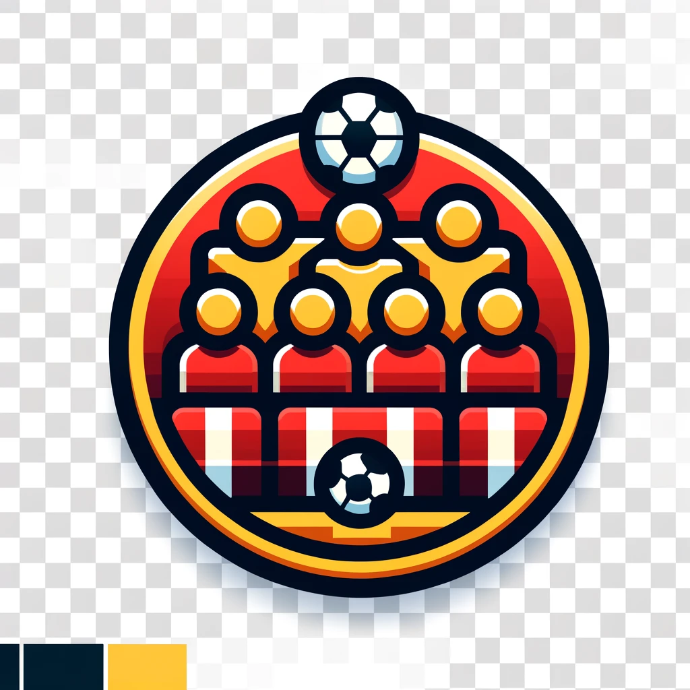

<section class=" mt-20">
  <div class="admin-dashboard">
    <div class="max-w-sm rounded overflow-hidden shadow-lg text-center" (click)="navigateTo('jugadores')">
      
      <div class="px-6 py-4">
        <div class="font-bold text-xl mb-2">Gestión de Jugadores</div>
        <p class="text-gray-700 text-base">Listar, crear, editar y borrar jugadores.</p>
        <button class="px-6 pt-4 pb-2" mat-raised-button color="primary">Gestionar Jugadores</button>
      </div>
    </div>

    <div class="max-w-sm rounded overflow-hidden shadow-lg text-center" (click)="navigateTo('equipos')">
      
      <div class="px-6 py-4">
        <div class="font-bold text-xl mb-2">Gestión de Equipos</div>
        <p class="text-gray-700 text-base">Listar, crear, editar y borrar equipos.</p>
        <button class="px-6 pt-4 pb-2" mat-raised-button color="primary">Gestionar Equipos</button>
      </div>
    </div>

    <div class="max-w-sm rounded overflow-hidden shadow-lg text-center" (click)="navigateTo('usuarios')">
      
      <div class="px-6 py-4">
        <div class="font-bold text-xl mb-2">Gestión de Usuarios</div>
        <p class="text-gray-700 text-base">Listar y desactivar cuentas de usuario.</p>
        <button class="px-6 pt-4 pb-2" mat-raised-button color="primary">Gestionar Usuarios</button>
      </div>
    </div>
    <div class="max-w-sm rounded overflow-hidden shadow-lg text-center" (click)="navigateTo('usuarios')">
      
      <div class="px-6 py-4">
        <div class="font-bold text-xl mb-2">Ver todas las transacciones</div>
        <p class="text-gray-700 text-base">Listar transacciones.</p>
        <button class="px-6 pt-4 pb-2" mat-raised-button color="primary">Ver historial de transacciones</button>
      </div>
    </div>
  </div>
</section>
